12 篇前沿论文 | 5 大分类 | 深度解读 + 工程蓝图 + 量化应用
多Agent辩论中角色分配（正方/反方/裁判）通常随机或固定。不同Agent能力特质不同，随机分配浪费能力。
类似公司面试：Agent先为每个角色做定制Pitch → 互相评审打分 → 系统综合分配最优角色。
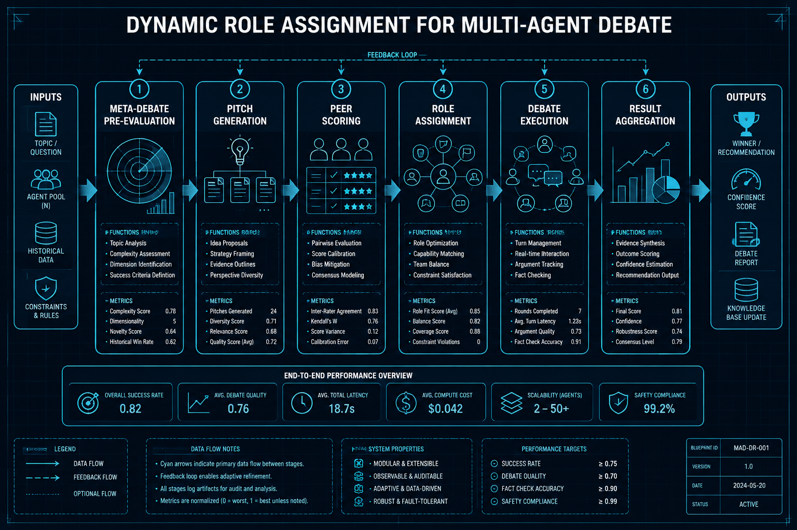
训练全能大模型成本极高。不如考试时临时组建专家团队。
RL策略网络决定邀请哪些专家 + 辩论几轮 + 谁权重更高。共享结构化记忆避免重复论述。
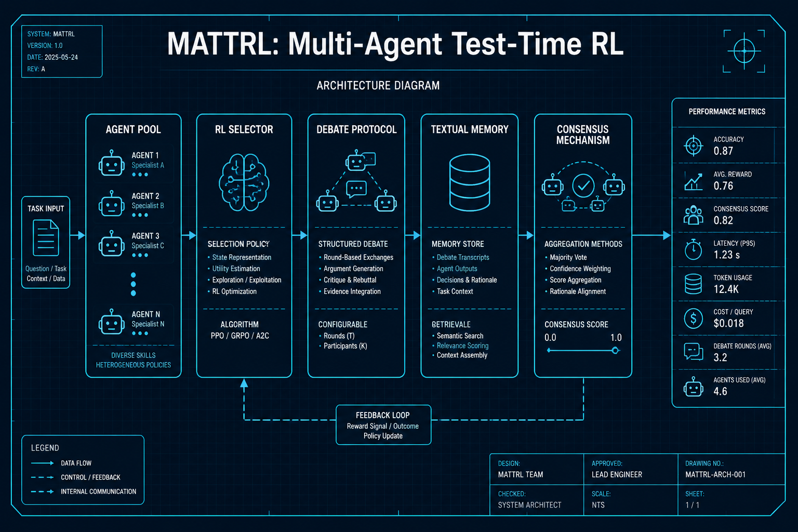
AI交易Agent缺乏统一评测标准，各团队用自己的数据评估无法横向对比。
定义标准金融任务 → 提供统一回测环境 → Agent策略自动执行 → 用Sharpe/MaxDD/胜率评分。
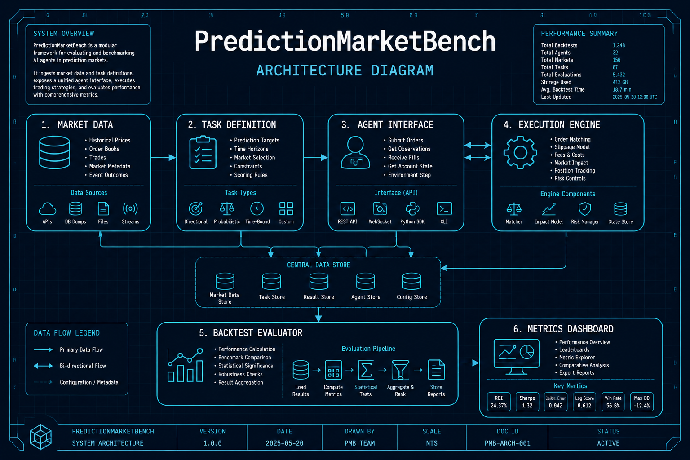
推理RL的信用分配难题：最终答案错了，到底哪步出了问题？传统方法需要外部评分器。
模型在每步推理后暂停 → 自我评估逻辑 → 生成"干预建议" → RL策略决定是否接受修正。
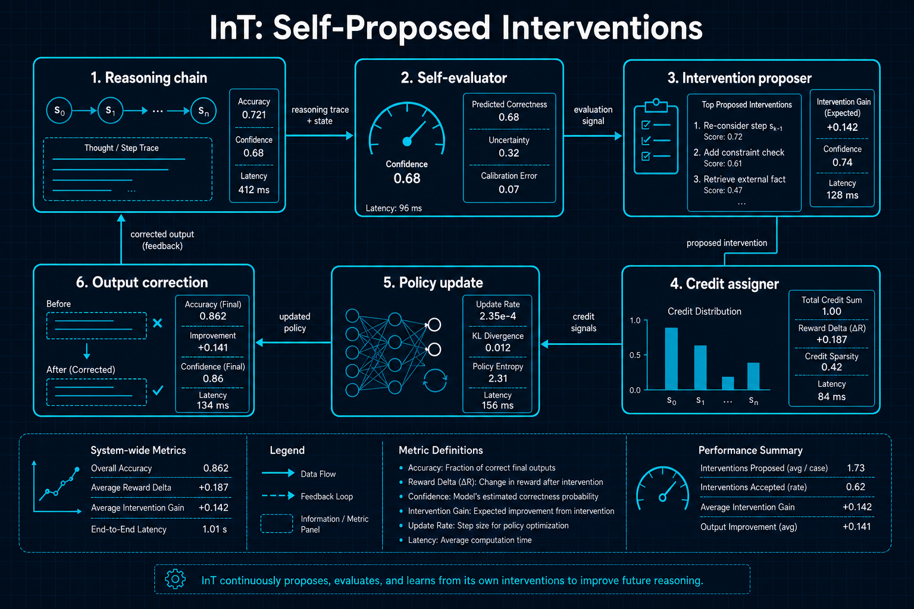
GRPO训练常遇早期崩溃：模型过早收敛到次优策略。根本原因是训练信号多样性不足。
同一题用多种模板呈现 + 每种模板配专属格式奖励，迫使模型多角度理解。
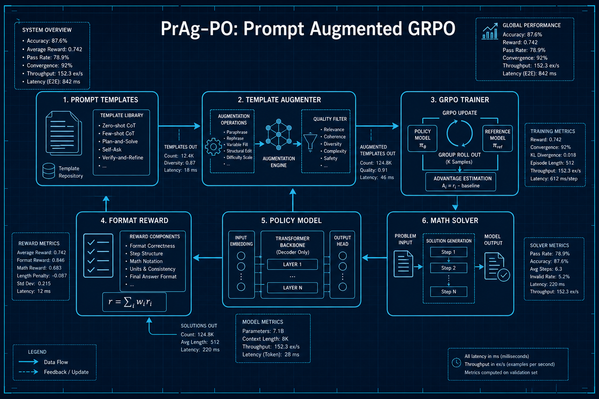
3D传感器数据充满噪声和遮挡，现有策略在干净数据上好用到真实环境就崩溃。
网络内在理解3D旋转/平移对称性 + 特征空间去噪 + 对比等变对齐。
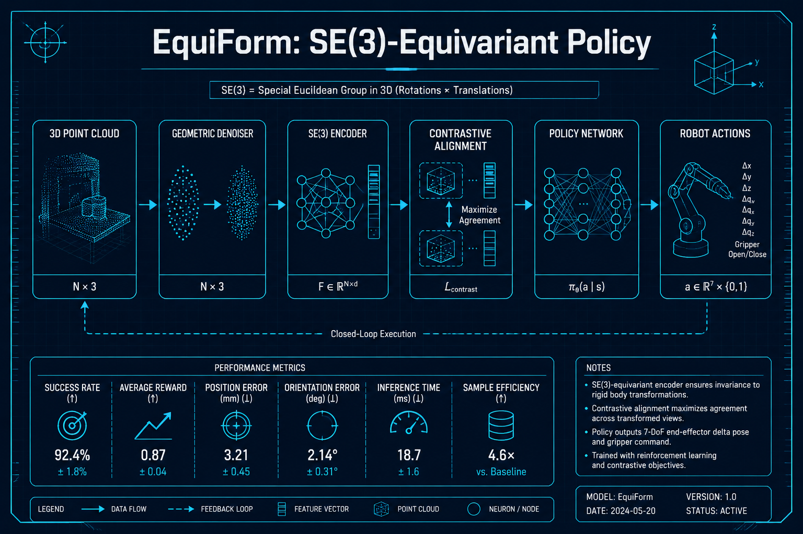
高动态动作的Sim-to-Real Gap极大，传统微调昂贵且危险（机器人可能摔坏）。
极端域随机化训练 + 技能压缩编码 → 直接驱动真实执行器。
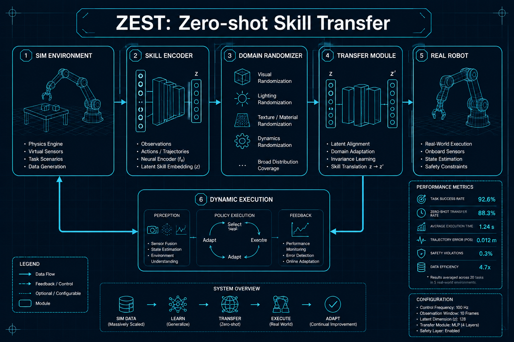
o1/R1等模型benchmark惊人，但真在"推理"还是高级"模式匹配"？
精巧探针实验：(1)简单问题注入扰动 (2)追踪中间层准确率跳变 (3)分析错误恢复能力。
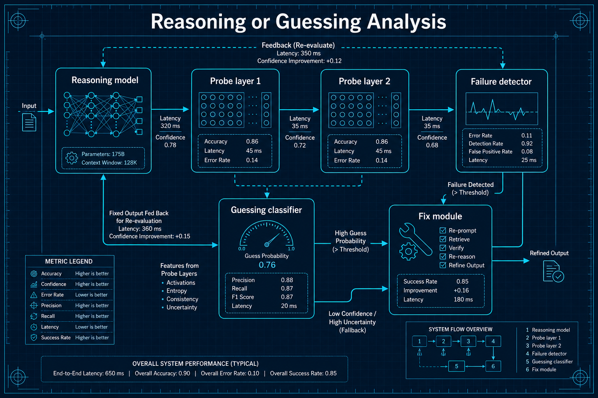
MoE扩展方向：增加专家数 vs 扩展嵌入维度，哪个更有效？
系统对比两种扩展策略。嵌入扩展提升Token表示丰富度，过多专家导致路由不稳定。
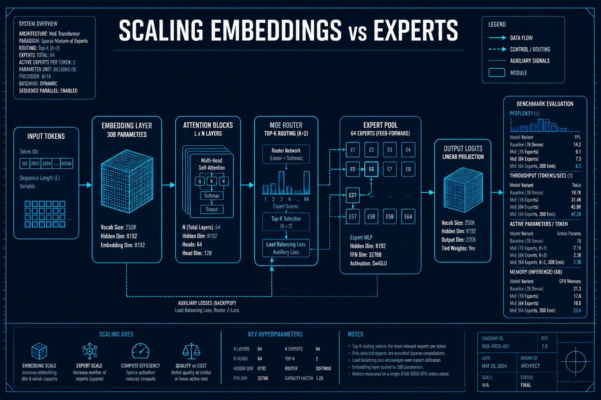
传统优化目标（Sharpe/收益）天然鼓励过拟合。策略历史完美实盘崩溃。
数据分N fold → 样本内外Sharpe对比 → GT-Score奖励样本外一致性。
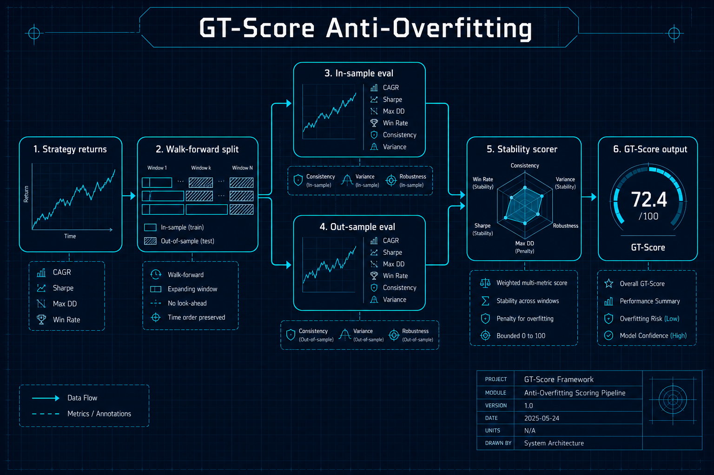
传统NLP对金融文本理解有限。LLM能否做得更好？增量有多大？
LLM多维度情感打分（方向+幅度+范围+不确定性）→ 作为预测特征 → 对比传统NLP。
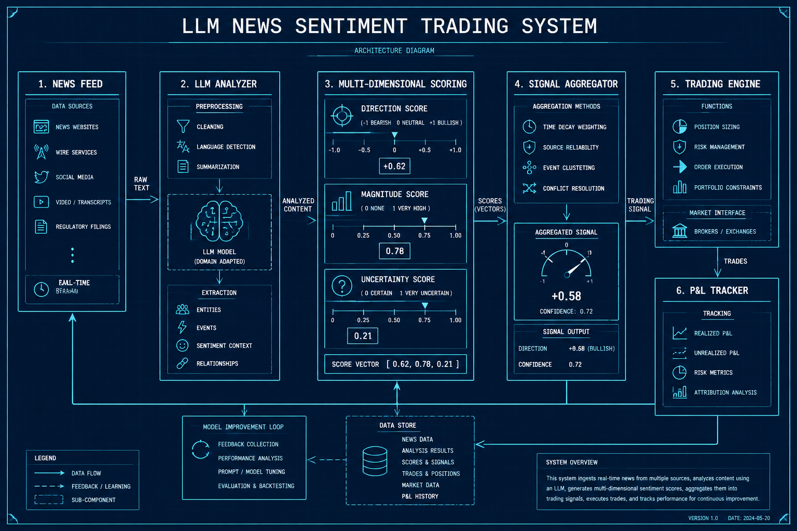
LLM到底能不能做量化？知识够不够？计算准不准？代码能跑吗？
三层评测：金融知识QA → 数值推理 → 交易代码生成+回测执行。
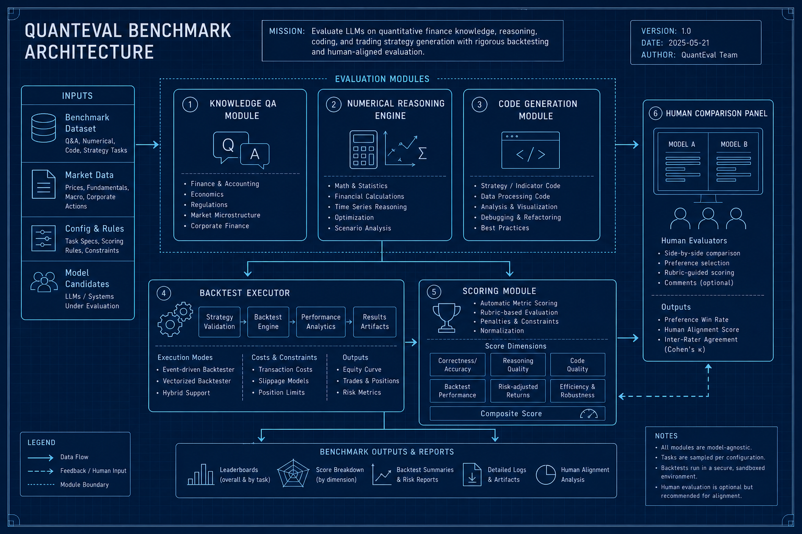